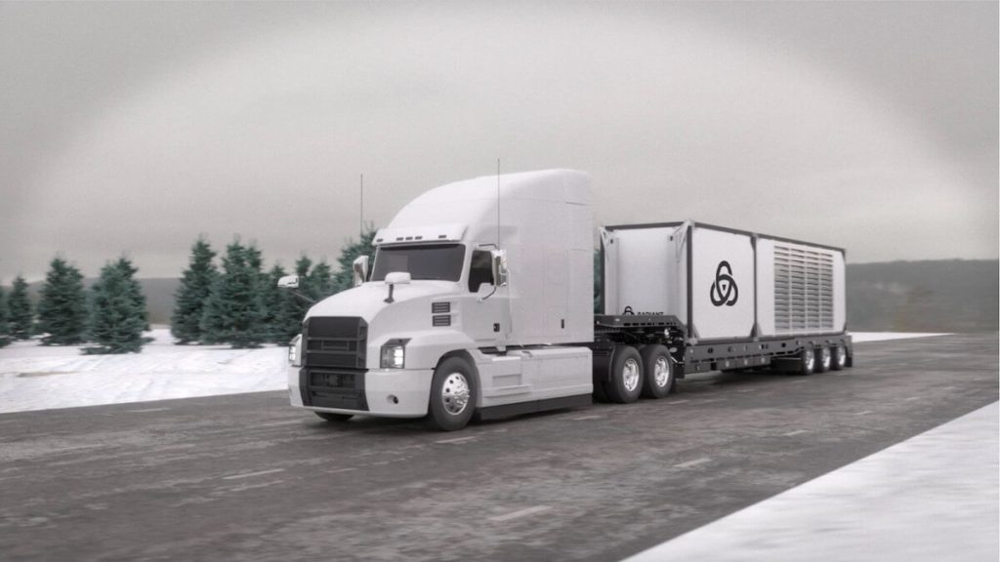
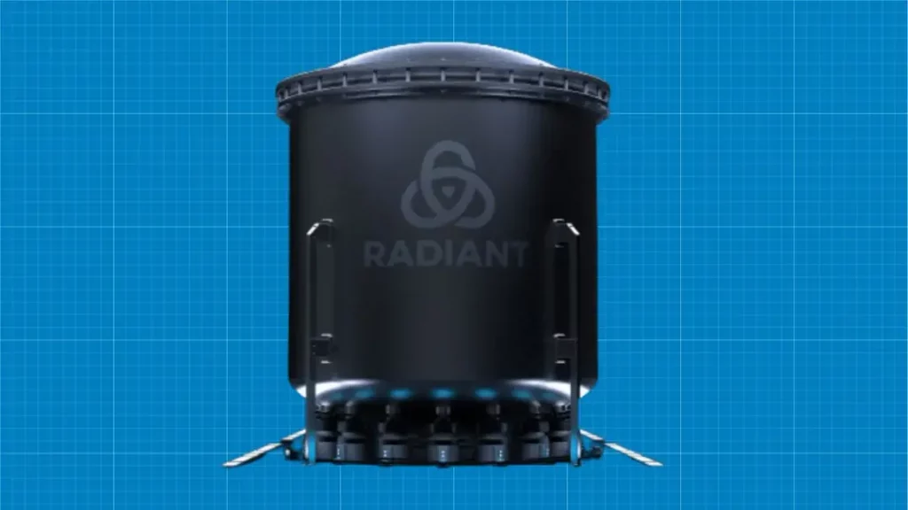

Radiant Nuclear ကုမ္ပဏီဟာ အမေရိကန် အစိုးရရဲ့ အိုင်ဒေဟို အမျိုးသား ဓါတ်ခွဲခန်း (Idaho National Laboratory) နဲ့ အာဂွန်း အမျိုးသား ဓါတ်ခွဲခန်း (Argonne National Laboratory) တို့နဲ့ ပူးပေါင်းပြီး အဏုမြူ ဓါတ်ပေါင်းဖို အသေးလေးတွေကို စမ်းသပ်နေတာ ဖြစ်ပါတယ်။
ရေဒီးယန့် စက်မှုလုပ်ငန်းဟာ သူ့ရဲ့ အဏုမြူ ဓါတ်ပေါင်းဖို အသေးတွေကို အလွယ်တကူ သယ်ဆောင် သွားနိုင်ပြီး စွမ်းအင်အားဖြင့် ၁ မက်ဂါဝပ် ပမာဏကို ထုတ်ပေးနိုင်ဖို့ ရည်ရွယ် သုတေသနပြု စမ်းသပ်နေတာ ဖြစ်ပါတယ်။ ဒီ စွမ်းအင် ပမာဏဟာ သာမန် အိမ်အလုံး ၁,၀၀၀ ကို လျှပ်စစ်ဓါတ်အား ပေးနိုင်ဖို့ လုံလောက်တဲ့ ပမာဏ ဖြစ်ပါတယ်။
ဒီ အဏုမြူ ဓါတ်ပေါင်းဖို အသေးလေးတွေ အလုပ်လုပ်နိုင်ဖို့ အဓိက အရေးပါတဲ့ အချက်ကတော့ TRISO particles လို့ခေါ်တဲ့ အဏုမြူ လောင်စာတွေပဲ ဖြစ်ပါတယ်။ ဒီ အဏုမြူ လောင်စာကို ယူရေနီယံ၊ အောက်ဆီဂျင် နဲ့ ကာဗွန်တွေ ရောစပ်ပြီး ပြုလုပ်ထားတာ ဖြစ်ပါတယ်။
ဒီ ရောစပ်ထားတဲ့ လောင်စာမှုန် တွေကို ကာဗွန်နဲ့ ကြွေရည်တွေနဲ့ ဖုံးအုပ် ထားပါတယ်။ ဒီ လောင်စာစေ့လေး တစ်စေ့ရဲ့ အရွယ်ဟာ နှမ်းစေ့ တစ်စေ့ထက်တောင် သေးငယ်ပါသေးတယ်။
ဒီ လောင်စာ အစေ့လေးတွေကို ရောပြီး ဘောလုံးပုံ (သို့) စလင်ဒါပုံ လောင်စာခဲ အနေနဲ့ ပုံသွင်း ပြီးတဲ့နောက် အဏုမြူ ဓါတ်ပေါင်းဖိုထဲကို ထည့်သွင်း အသုံးပြုနိုင်မှာ ဖြစ်ပါတယ်။

အခုထိ ဓါတ်ခွဲခန်း စမ်းသပ်မှု တွေအရ ဒီ TRISO particles အဏုမြူ လောင်စာခဲ တွေကို အပူချိန် ဖာရင်ဟိုက် ဒီဂရီ ၃,၀၀၀ (၁,၆၄၈ ဒီဂရီ စင်တီဂရိတ်) အထိ လုံခြုံစိတ်ချစွာ အပူပေး စမ်းသပ် အောင်မြင်ခဲ့ပြီး ဖြစ်တယ်လို့ သိရပါတယ်။ ဒါဟာ လက်ရှိ အဏုမြူ ဓါတ်ပေါင်းဖို အများစု အမြင့်ဆုံး ရောက်ရှိနိုင်တဲ့ အပူချိန်ထက် ပိုမို မြင့်မားတဲ့ အပူချိန် ဖြစ်ပါတယ်။
နောက်ပြီး ဒီ အဏုမြူ ဓါတ်ပေါင်းဖို တွေကို အအေးခံဖို့ ဟီလီယံ ဓါတ်ငွေ့ကို အသုံးပြုမှာ ဖြစ်ပါတယ်။ ဒါဟာ အကယ်လို အပူချိန် လွန်ကဲလာရင် ဓါတ်ပေါင်းဖို အရည် ပျော်မသွားအောင် ကာကွယ်တဲ့ ဒုတိယ အဆင့် ကာကွယ်ရေး ဖြစ်ပါတယ်။
ဒီ ဓါတ်ပေါင်းဖို အသေးတွေဟာ လောင်စာ တစ်ခါဖြည့် ထားရင် ၅ နှစ် ခံမယ်လို့ သိရပါတယ်။ ဒီ အဏုမြူ ဓါတ်ပေါင်းဖိုကို ဝေးလံခေါင်ဖျားတဲ့ အရပ်ဒေသတွေ နဲ့ သဘဝ ဘေးန္တရာယ် ကြုံတွေ့နေရလို့ လျှပ်စစ်ဓါတ်အား ပြတ်တောက်နေတဲ့ ဒေသတွေ ကို အရေးပေါ် လျှပ်စစ်ဓါတ်အား ပေးနိုင်ဖို့ အသုံးပြုနိုင်မှာ ဖြစ်ပါတယ်။
လက်ရှိမှာ ဒီ အဏုမြူ ဓါတ်ပေါင်းဖို အသေးစား တွေရဲ့ ဒီဇိုင်း နဲ့ နည်းပညာကို အစိုးရရဲ့ ခွင့်ပြုချက် ရရှိရေး အတွက် ဆောင်ရွက်နေပြီလို့ သိရပါတယ်။
